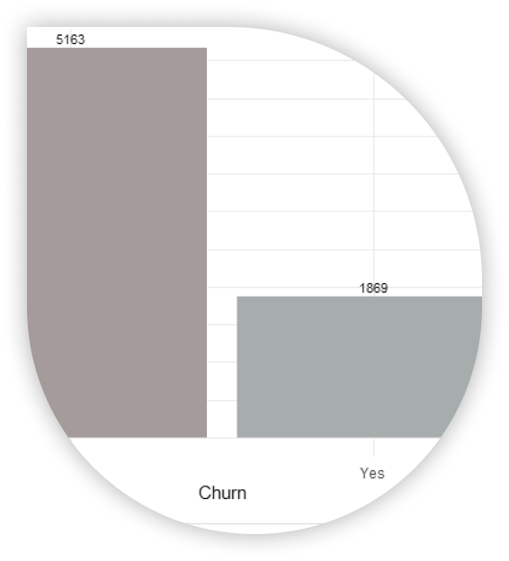
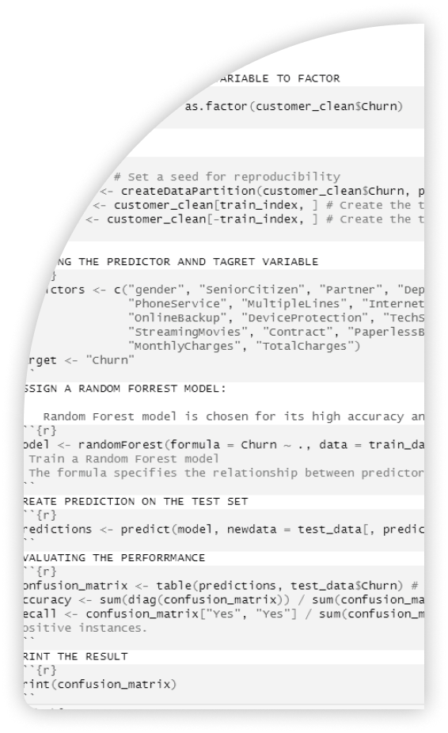

Go to project repo here


I applied Random Forest algorithms to predict customer churn within a telecommunications company. This project involved comprehensive exploration and analysis of the dataset to develop an effective predictive model.
Churn Prediction:
Telco Company
Telco Company